8. Chapter 4: Cloud Control micro:bit by IFTTT¶
8.1. Introduction¶
In this chapter, you will know how to control micro:bit from the IFTTT cloud. Once there are some changes on Internet services like weather, time or different connected devices like voice assistant and some smart home device, you can send the command to micro:bit to do the action.

In practice, the below example you may apply for:
Turn the street light on at 6pm and off after 6am everyday
Turn on the water pump every day at 06:00 for 2 second
If the forecast weather is rain, open the umbrella
Use voice command to control robot actions
When the door is closed, LED is turned on.
8.2. Scenario Example¶
Goal:
The micro:bit is connected to the Internet. Once the time is changed to 6 pm, the IFTTT cloud will send the command to the micro:bit to turn on the LED.
Description:
In this example, there are 2 parts involved.
In part 1, we need to connect the micro:bit to the internet and get the device ID.
In part 2, set the rule on IFTTT applet. If the time is 6 pm, set the command “light_on”

8.3. Part 1: Coding¶
Goal:
We need to get the Device ID and set the corresponding action.
Connection Diagram:
Connect LED to P0
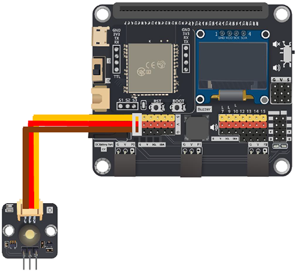
Step 1: Connect WiFi
Before we try to use WiFi Control function, we need to connect to the network, we have already know how to connect to the WiFi on the first chapter.
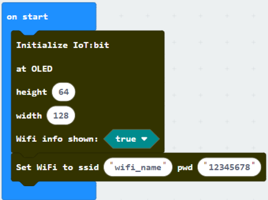
Step 2: Get Device ID
On WiFi connected is an event handler. It will be triggered once after connected with WiFi. The handler will provide the Device ID variable which used to identify and control the Microbit.
Go to OLED Tab
Snap
initialize OLED with width…height..toon startSnap the
show stringinside theOn WiFi connectedDraw the
Device IDvariable fromOn WiFi connectedto theshow tringblock placeholder
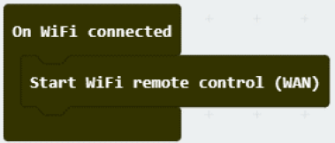
*If you worried about forget the Device ID during program running, you may access it by the variable under Control tab
Go to Control tab
Snap the
Device IDvariable to the placeholder 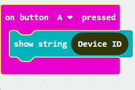
Step 3: Control with Command
After connected to the WiFI, the connection to the server will be done automatically, it is ready to receive command though network. To get the command, we can use the on Wi-Fi received handler in WAN control tab.
Snap the
on WiFi receivedhandler to stageDo the
if-condition statementto the variableWAN_CommandIf
Wan_command“light_on” is received, white LED will be turned on (intensity:1023)If
Wan_command“light_off” is received, white LED will be turned off (intensity:0)
Attention: Please be aware that the P is in capital letter.

Step 4: Show the Command
Sometimes you may need to show the recevied command for debugging, so if you need that, you can use the OLED show string to display the command on the OLED.
Go to OLED
Snap the
clear OLED displaytoOn WiFi receivedto avoid overlapSnap the
show stringtoOn WiFi receivedDraw the
WAN_Commandvariable toshow stringplaceholder
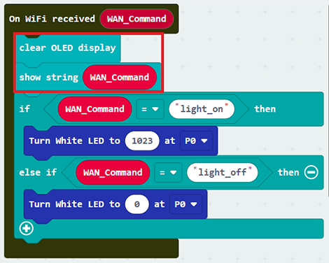
Advanced Usage(with value):
If you want to control the module with value, you can use the another block which contain value variable.
If Wan command “LightValue” is received, white LED will be turned on with the given intensity value.
You may also show the WAN_Command and value by show string.

Full Solution
MakeCode: https://makecode.microbit.org/_JmF1kVKaThzv
You could also download the program from the following website:
8.4. Part 2: IFTTT Applet Configuration¶
Goal:
We need to setup the IFTTT Applet to control the MircobitStep 1: Create or login to IFTTT account
Open your browser , go to https://ifttt.com/. Register your IFTTT account and once completed, log in to your IFTTT account.

Step 2: Create Applets
On the top right menu, click “Create” > “Applets”

Step 3: Set the Rules
On IFTTT configuration, set the below. We can set the rule on the IFTTT, if something happened like time at 6:00 p.m., we can do the corresponding action.
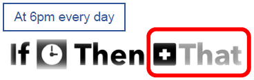
A. Trigger Part

1.Search “Date” and select “Date & Time”
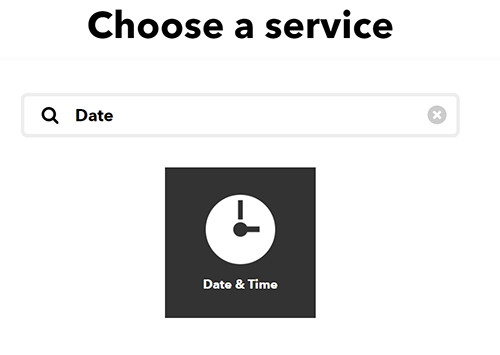
2.Finish the time setting.
Choose trigger “Every day at”
Select the time (e.g. 06PM, 00Minutes; it menas every day at 6pm) and click “Create trigger”
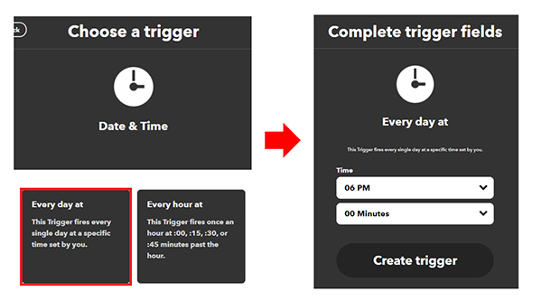
B. Action Part
1.Search “micro:bit” and you will see “Smarthon IoT(micro:bit)”
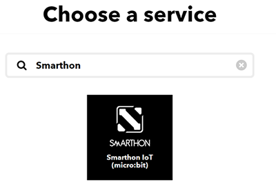
2.Finish the mirco:bit setting.
Choose action “Control Command”
Input your
Device ID(e.g. 0xa3240ac45916) andcontrol command(e.g. light_on). Then click “Create action” 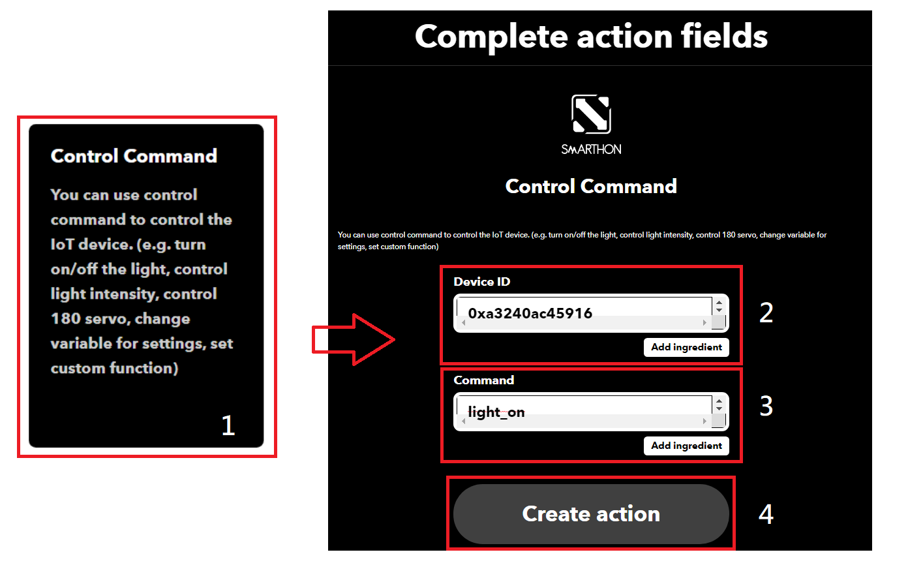
Optional
If you need to send the command with value to the micro:bit
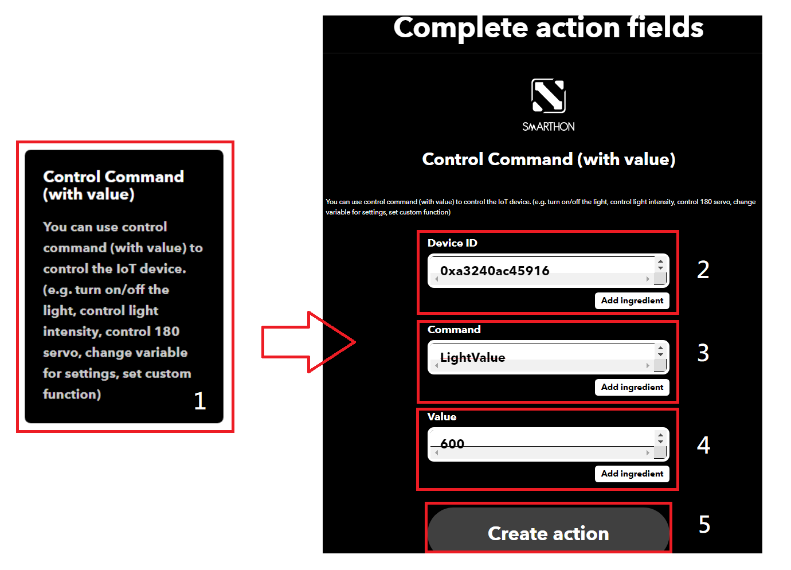
8.5. Result¶
Normal Case:
After connected to WiFi, micro:bit will connect to control server and keep listening to the WAN command
Every day at 6pm, clock will trigger IFTTT to send out micro:bit WAN command “light_On”
Micro:bit will recevie the command
The LED on P0 will be turned on.

Advanced Usage(with value):
When change the applet to contain value version, it will have an additional variable value included
Every day at 6pm, clock will trigger IFTTT to send out micro:bit WAN command “LightValue” (with value “600”)
Micro:bit will recevie the command
The LED on P0 will be turned on (with light intensity: 600). 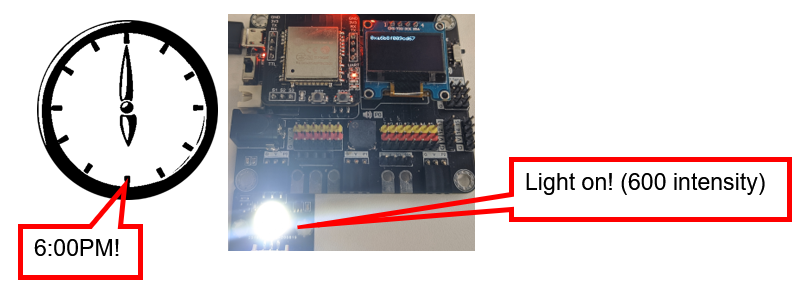